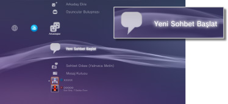
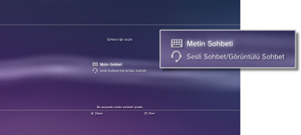
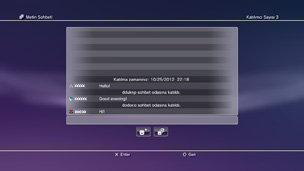

Arkadaşlar > Metin sohbet > Metin sohbeti başlatma veya sohbetten çıkma
Metin sohbeti başlatma veya sohbetten çıkma
Bu özelliği kullanmak için, sistem yazılımını güncellemeniz gerekebilir.
Arkadaşlar listenizdeki kişilerle metin sohbeti yapabilirsiniz.
Metin sohbetini başlatma
1. |
|
|---|---|
|
 |
|
2. |
|
|
 |
|
3. |
Metin sohbeti odası için bir ad girin ve sonra [OK] öğesini seçin. |
4. |
Sohbete davet etmek istediğiniz Arkadaşları seçin ve sonra [OK] öğesini seçin. |
|
 |
 (Yeni Sohbet Başlat) öğesini seçin.
(Yeni Sohbet Başlat) öğesini seçin. (Metin Sohbeti) öğesini seçin.
(Metin Sohbeti) öğesini seçin.İpuçları
- Metin sohbeti yapabilmek için PSNSM oturumu açmanız gerekir.
- Sohbet daveti mesajı metin sohbeti için gönderilmez.
- Bir metin sohbeti odasına en fazla 16 kişi katılabilir.
- Kullanım sınırlamaları ayarlanırsa metin sohbeti özelliği kullanılamaz. Ebeveyn kontrolü ayarları hakkında bilgi için, bu kılavuzdaki [XMB™ menüsü hakkında] > [Ebeveyn kontrolü ayarlarını kullanma] konusuna bakın.
Bir metin sohbeti odasına katılma
Bir metin sohbeti yapmaya davet edilirseniz, ekranın sağ üst köşesinde bir bildirim mesajı görüntülenir.  (Arkadaşlar) altında
(Arkadaşlar) altında  (Sohbet Odası (Yalnızca Metin)) öğesini seçin ve sonra katılmak istediğiniz sohbet odasını seçin.
(Sohbet Odası (Yalnızca Metin)) öğesini seçin ve sonra katılmak istediğiniz sohbet odasını seçin.
İpuçları
 (Ayarlar) >
(Ayarlar) >  (Sistem Ayarları) altında [Bildirim Mesajları] içinde [Görüntüleme] ayarlanırsa, bildirim mesajları görüntülenmez.
(Sistem Ayarları) altında [Bildirim Mesajları] içinde [Görüntüleme] ayarlanırsa, bildirim mesajları görüntülenmez.- Çoğu oyun başlığı için oyun oynarken bir metin sohbetine katılabilirsiniz. Kablosuz kontrol cihazında PS düğmesine basın ve sonra (Arkadaşlar) > (Sohbet Odası (Yalnızca Metin)) altında katılmak istediğiniz sohbet odasını seçin. Oyun ekranına dönmek için PS düğmesine basın.
- Aynı anda en fazla üç sohbet odasına katılabilirsiniz. Dördüncü bir sohbet odasına katılırsanız, otomatik olarak ilk katıldığınız sohbet odasından ayrılırsınız.
- En fazla 20 sohbet odası (Sohbet Odası (Yalnızca Metin)) içinde görüntülenebilir. 20'den fazla sohbet odası olduğunda, yeni sohbet odaları açıldığından en eski sohbet odaları otomatik olarak silinir.
Sohbet odasından ayrılma
Metin sohbet ekranını kapatmak için  düğmesine basın. Ayrılmak istediğiniz sohbet odasını seçin,
düğmesine basın. Ayrılmak istediğiniz sohbet odasını seçin,  düğmesine basın ve sonra seçenekler menüsünden [Ayrıl] öğesini seçin.
düğmesine basın ve sonra seçenekler menüsünden [Ayrıl] öğesini seçin.
İpucu
PS3™ sistemini kapatırsanız veya PSNSM oturumunu kapatırsanız, otomatik olarak sohbet odasından ayrılırsınız. Bir sohbet odasından ayrıldıktan sonra bu odaya yeniden katılırsanız, gittiğinizde gönderilen sohbet girişleri kaydı görüntülenmez.
Sohbet odasını silme
Silmek istediğiniz sohbet odasını seçin, düğmesine basın ve sonra seçenekler menüsünden [Sil] öğesini seçin.
Kontrol panelini kullanma
Metin sohbeti ekranında kontrol panelini kullanarak aşağıdaki işlemleri gerçekleştirebilirsiniz.
 |
Arkadaşını Davet Et | Metin sohbeti odasına katılması için bir arkadaşı davet edin |
|---|---|---|
 |
Katılımcı Listesi | Sohbet odasına katılan kişilerin listesini görüntüleyin |